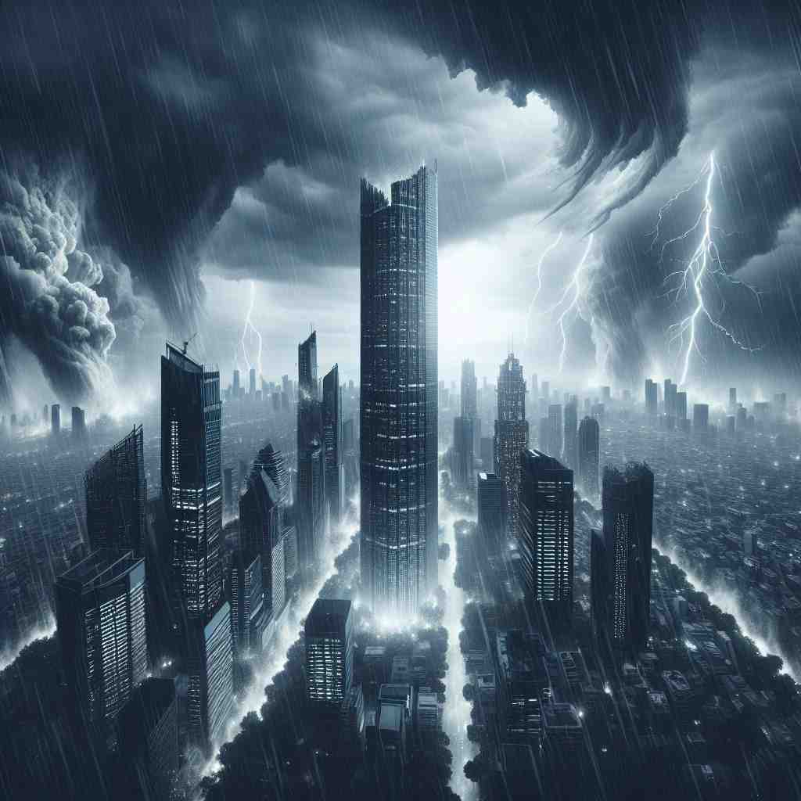

💬 The storm will ruin the building if it continues.

💬 The storm will ruin a building if it keeps getting worse.

💬 The storm will ruin the building if it continues.

💬 The storm will ruin the city if it continues like this.
🔈 ['ruːɪn]
🗝️ v. to damage or destroy something completely
🖼️ 在一个狂风肆虐的夜晚，一棵大树倒下，重重地砸在一辆崭新的汽车上，车身严重变形，玻璃碎片四溅，显示出汽车被完全摧毁的状态。
🔍 想象一座建筑物被完全摧毁的场景，这就是'ruin'的核心含义。无论是对物质、财务还是抽象事物的破坏，都源于这个彻底毁坏的概念。记住这个画面，你就能轻松联想到'ruin'的各种用法，包括它作为动词时的破坏行为，以及作为名词时描述的破坏结果或残余。
💬 The storm will ruin the building if it continues.
💬 The storm will ruin a building if it keeps getting worse.
💬 The storm will ruin the building if it continues.
💬 The storm will ruin the city if it continues like this.
🌳 词根 'ruin' 源自拉丁语 'ruina'，意为 '毁灭'。这个单词本身并没有复杂的前缀或后缀结构，直接表示'毁灭'或'破坏'。
💡 可以联想 'ruin' 和 'rain' 的谐音，在长时间不修缮建筑时，大雨（rain）可能导致建筑物的'ruin'（毁坏）。这种视觉化的联想帮助记忆单词的意思。
🗝️ v. to cause someone to lose all their money
🖼️ 在一个热闹的赌场里，一名男子因接连的赌博失利而面色惨淡。他看着自己的筹码一点点被拿走，口袋空空如也，彻底失去了所有的财产。
💬 The stock market crash ruined many investors.
❓ 财务上的完全破坏
🗝️ v. to spoil or have a very bad effect on something
🖼️ 在一个精心策划的婚礼上，突如其来的暴雨淋湿了现场，椅子和装饰品被吹得七零八落，新娘的妆容也被打湿，整个场合一片狼藉，破坏了婚礼的美好氛围。
💬 Don't let one mistake ruin your whole day.
❓ 对事物产生严重的负面影响
🗝️ n. the state of being severely damaged or destroyed
🖼️ 在一个被遗弃的城市中，建筑物倒塌，街道荒芜，树木枯萎，一片凄凉的废墟景象展现在眼前，历史的辉煌已不复存在。
💬 The ancient city lay in ruins after the earthquake.
❓ 从动词转化为名词，描述破坏的结果
🗝️ n. the remains of a building that has been destroyed
🖼️ 在一片荒野之中，曾经的古堡仅剩下几面断壁残垣，藤蔓缠绕，石块破碎，仿佛在静静诉说着昔日的故事与荣耀。
💬 Tourists often visit the ruins of ancient civilizations.
❓ 具体化为建筑物的残余
🗝️ n. the complete loss of your money and possessions
🖼️ 在一个法庭上，一位企业家因投资失败而面对破产，他低头叹息，心知自己的财富和财产都在一夜之间化为乌有。
💬 His gambling addiction led to his financial ruin.
❓ 财务破坏的结果